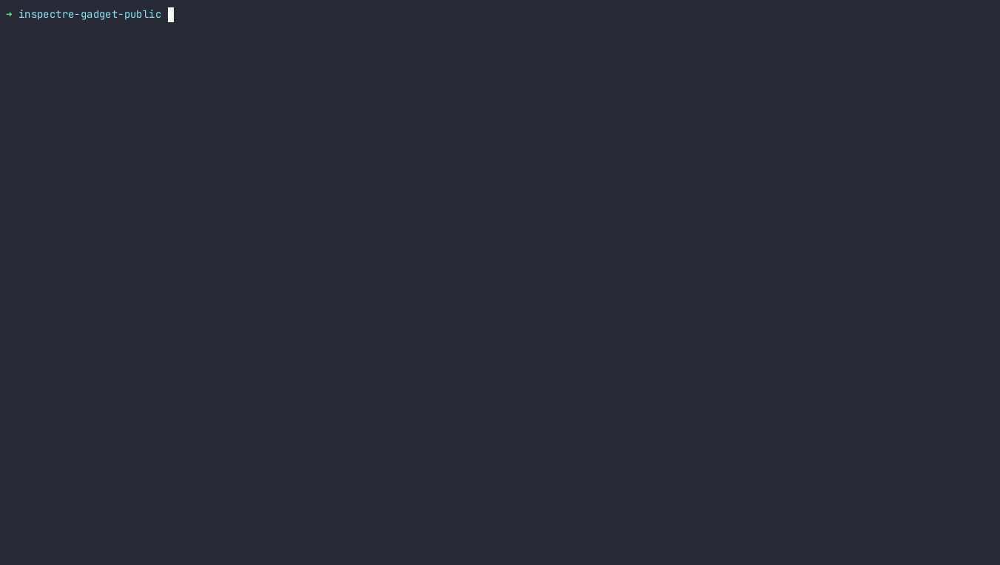

Getting Started
Installation
Just install python3, clone the repo and pip3 install -r requirements.txt in a virtual environment.
Some of our scripts use batcat and sqlite3, although
they are not required for the core of the tool (analyzer and reasoner).
Build Docs
pip install sphinx myst-parser sphinx_rtd_theme sphinx-rtd-size
cd docs
make html
# --> open _build/html/index.html in a browser
Usage
The basic usage of the tool is to run inspectre analyze on a binary to extract
all potential transmissions, and then use inspectre reason to mark the exploitable ones.
For the analyzer, the user should provide:
a binary
a list of speculation entrypoints, in a CSV with the format
<HEX_ADDRESS>,<ENTRYPOINT_NAME>a config file in YAML format (you can find an example in the source code)
the name of the CSV output
(optionally) a folder where to output the annotated assembly of each gadget
inspectre analyze <BINARY> --address-list <CSV_FILE> --config <YAML_CONFIG> --output <FILE> --asm <FOLDER>
For the reasoner, you only need to provide the CSV produced by the analyzer as input.
A list of all the flags can be found by invoking inspectre <SUBCOMMAND> --help.
Workflow
A typical workflow might look something like this.
# Find all potential transmissions in the given binary.
mkdir out
inspectre analyze <BINARY> --address-list <CSV_FILE> --config config_all.yaml --output out/gadgets.csv --asm out/asm
# Evaluate exploitability.
inspectre reason out/gadgets.csv out/gadgets-reasoned.csv
# Import the CSV in a database and query the results.
# You can use any DB, this is just an example with sqlite3.
sqlite3 :memory: -cmd '.mode csv' -cmd '.separator ;' -cmd '.import out/gadgets-reasoned.csv gadgets' -cmd '.mode table' < queries/exploitable_list.sql
# Manually inspect interesting candidates.
inspectre show <UUID>
Demo
